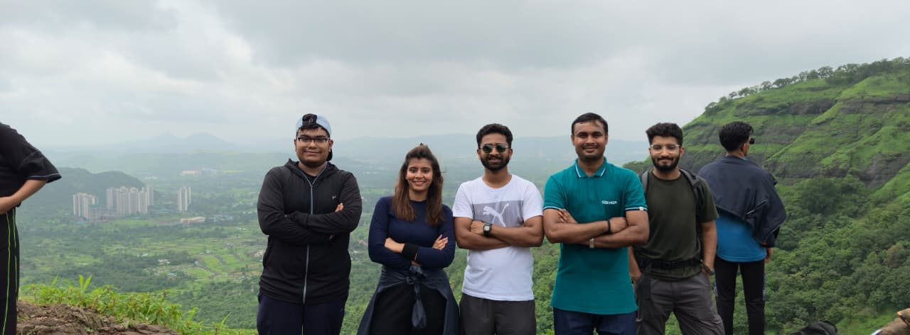

Home / Your collection
Your collection
The moments you kept close.
Your favourite photographs, bookmarked in this browser.
All albums ↗Saved in this browser

Your collection
Your favourite photographs, bookmarked in this browser.